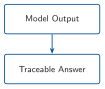
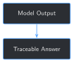

import re
# Words that appear in every prompt's own instruction/input template
# ("What happened on this well during this time window?"), not because
# the retrieved text was actually used. Counting them as "supported"
# would make every answer look more grounded than it is.
STOPWORDS = {
"a", "an", "and", "are", "as", "at", "be", "been", "but", "by", "during",
"for", "from", "happened", "in", "is", "it", "its", "of", "on", "or",
"report", "the", "this", "time", "to", "was", "well", "were", "what",
"which", "window", "with",
}
def content_words(text: str) -> set[str]:
words = re.findall(r"[a-z0-9']+", text.lower())
return {w for w in words if w not in STOPWORDS and len(w) > 2}
def faithfulness_score(answer: str, source_text: str) -> float:
answer_words = content_words(answer)
if not answer_words:
return 0.0
return len(answer_words & content_words(source_text)) / len(answer_words)
print(faithfulness_score("Test choke manifold at 5000psi", "test choke manifold 5000 psi"))
print(faithfulness_score("Test choke manifold at 5000psi", "Step Rate Test: 5K increments, 5 mins each, 800 gpm, 40 rotary WOB"))10 Traceable Outputs and Hallucination Mitigation


Progress ██████████░░░ 10 / 13 · Estimated time: 30-40 min · Difficulty: 🟠 Intermediate
10.1 Learning objectives
By the end of this chapter, you will be able to:
- Explain why a citation Chapter 9 attaches to an answer means “this is what was retrieved,” not “this is what the answer is actually based on” — and why those two claims can silently diverge
- Build a real, inspectable faithfulness check that scores an answer against each individual source chunk it was shown
- Run that check against Chapter 9’s own 4 test cases and find a real case where an answer looks grounded but is actually traceable to the wrong report
- Explain the limits of a word-overlap faithfulness check: what kind of mistake it can and can’t catch
10.2 Operational Problem
Oumy, the drilling engineer who built Chapter 6’s quality gate to catch bad training data before anything gets trained on it, looks at Chapter 9’s hybrid system and asks the natural next question: “We check the data going in. How do we check the answer coming out?”
Chapter 9’s own Field Notes already found the specific problem this chapter has to fix: across its 4 test cases, retrieval found the correct report every time, but the fine-tuned model’s answer was only actually consistent with that report’s text once. A citation Chapter 9 attaches to an answer only ever meant “this is what retrieval handed the model” — nothing in Chapter 9 checks whether the model’s answer used it.
10.3 Example: a citation that’s true, and an answer that isn’t
Ask Chapter 9’s system about report #21’s step rate test, and it retrieves report #21’s real text in its top 3 — the actual test, timestamped and logged:
NoteReport #21, 15:30-16:00 – the report actually asked about
Step Rate Test: 5K increments, 5 mins each
set 800 gpm, 40 rotary WOB
Depth Differential
20K 4,946 110
25K 4,946 130
...The grounded answer that comes back is fluent and specific: “Test choke manifold at 5000psi.” Every word of it is real — but it isn’t from report #21. It’s lifted from a different report retrieval also handed the model in the same prompt:
NoteReport #27, 06:00-11:00 – retrieved alongside #21, and where this answer actually came from
PJSM, pre job safety meeting
Production Drilling
Test B.O.P.
Test BOPE 250 psi low 5000 psi high, test casing 1500 psi,
test choke manifold 5000 psiReport #27 is a blowout-preventer pressure test — a completely different operation. The model didn’t invent “5000psi” out of thin air, so this isn’t the obviously-wrong-and-fluent failure Chapter 3 first showed. It’s worse: a real number, from a real report, attached to the wrong question. Chapter 9’s citation for this answer would have listed report #21 right alongside #27 — both were retrieved — with no way to tell which one the answer actually came from.
10.4 Theory
TipEngineering Translation: faithfulness / grounding
An answer is grounded in a source if it’s actually built from that source’s content — not just handed the source alongside an unrelated guess. Faithfulness is how well an answer matches what a specific source actually says. A hybrid system can be grounded in general (it retrieved real reports) while being unfaithful in the specific answer it gave (it didn’t actually use them) — that gap is exactly what report #21’s example above shows.
TipEngineering Translation: hallucination
A hallucination is a fluent, confident model output that isn’t actually supported by real evidence. Chapter 1 showed the obvious kind — confident nonsense with nothing behind it. Report #21’s example above is the harder kind: a hallucination made of entirely real words, borrowed from the wrong place. Both are hallucinations; only one of them is easy to spot by reading the answer alone.
10.5 Why trusting a citation isn’t enough
The tempting shortcut: if an answer comes with a citation — a report number and time window retrieval actually found — treat it as trustworthy. Report #21’s example shows exactly why that fails: the citation Chapter 9 would print alongside this answer is true (report #21 really was retrieved, really is relevant to the question) and the answer is still wrong. A citation only proves retrieval did its job. It proves nothing about whether the generation step actually used the report it names, instead of a different one sitting in the same prompt. Catching that gap needs something that looks at the answer’s own words, not just the list of sources it was handed.
10.6 Implementation
10.6.1 Step 1: Score an answer against a single source
10.7 What problem are we solving?
Turn “does this answer match this source?” into a real, checkable number — something simple enough to read and trust, not a second opaque model making an opaque judgment call.
10.8 Inputs
- One generated
answer(a string) - One candidate
source_text(a string) — a single retrieved chunk
10.9 Expected Output
A score from 0.0 to 1.0: the fraction of the answer’s meaningful words that also appear somewhere in the source.
Running this exact code prints:
0.75
0.2510.10 What just happened?
The exact same generated answer scores 0.75 against report #27’s text and only 0.25 against report #21’s — the report it was actually supposed to be about. The number alone already tells the story Chapter 9 could only tell by reading both answers by eye: this answer is faithful to something, just not the thing it was asked about.
0.75, not 1.0, is itself worth noticing: the answer’s own "5000psi" (no space) doesn’t match report #27’s "5000 psi" (two words) as a token, even though a person reading both would call them the same number. A word-overlap check is exactly this literal — Production Reality below has more on what that costs.
10.11 Production Reality
This is a plain word-overlap check, not a semantic one. It will miss a genuine paraphrase (an answer that says the same thing in different words scores low even when it’s correct), and it can’t detect a directional or factual inversion buried inside otherwise-matching words — Field Notes below shows a real case of exactly that. A production system checking higher-stakes claims would pair this with a real entailment or fact-verification model; this chapter’s version is deliberately simple enough to read every line of and trust what it’s actually measuring.
10.11.1 Step 2: Keep only the sources an answer is actually traceable to
10.12 What problem are we solving?
Chapter 9’s answer_with_retrieval cites every chunk retrieval handed the model, whether or not the answer used it. Turn that into a citation list that only survives if the answer is actually faithful to it.
10.13 Inputs
- The loaded, fine-tuned
modelandtokenizerfrom Chapter 8/9 instruction,input_context, and a retrievalquery(Chapter 9)- The retrieval
corpusandbm25index (Chapter 9)
10.14 Expected Output
The generated answer, every retrieved chunk’s faithfulness score, and a verified_sources list containing only the chunks that actually cross a faithfulness threshold.
def answer_with_traceable_sources(model, tokenizer, instruction, input_context, query, corpus, bm25, k=3, threshold=0.5) -> dict:
retrieved = retrieve(query, corpus, bm25, k=k)
prompt = build_grounded_prompt(instruction, input_context, retrieved)
answer = generate_reply(model, tokenizer, prompt, max_new_tokens=60)
scored = sorted(
({**chunk, "faithfulness": faithfulness_score(answer, chunk["text"])} for chunk in retrieved),
key=lambda c: c["faithfulness"],
reverse=True,
)
verified_sources = [c for c in scored if c["faithfulness"] >= threshold]
return {"answer": answer, "retrieved": scored, "verified_sources": verified_sources, "grounded": len(verified_sources) > 0}10.15 What just happened?
retrieve and build_grounded_prompt are Chapter 9’s own functions, reused unchanged — this step doesn’t touch how retrieval or generation work, only what happens to the result afterward. threshold=0.5 is a plain default, not tuned to any one answer; Step 3 shows what it does across all 4 of Chapter 9’s real test cases.
10.16 Production Reality
k (how many chunks get retrieved and shown to the model) directly controls how much unrelated material sits in the same prompt as the right answer, and report #21’s example is exactly what happens when that goes wrong: the correct report was in the prompt, and the model still reached for a different one next to it. A production system would tune k against real faithfulness measurements like this one, not just against retrieval accuracy.
10.16.1 Step 3: Run the check against Chapter 9’s real test cases
10.17 What problem are we solving?
Apply Step 2’s function to all 4 of Chapter 9’s test cases and see, with real numbers, how often “grounded” actually means “grounded in the right report.”
10.18 Inputs
- Chapter 9’s
TEST_CASES(4 real report questions) andINSTRUCTION - The fine-tuned checkpoint, retrieval corpus, and BM25 index
10.19 Expected Output
Per-case answers, faithfulness scores against every retrieved chunk, and which sources (if any) survive as verified citations.
for label, input_context, query, target_report in TEST_CASES:
result = answer_with_traceable_sources(lora_model, tokenizer, INSTRUCTION, input_context, query, corpus, bm25)
print(f"{label}: {result['answer']}")
print(f" grounded: {result['grounded']}")
for chunk in result["retrieved"]:
mark = "verified" if chunk["faithfulness"] >= 0.5 else "not used"
print(f" [{mark:>8}] Report #{chunk['report_num']} (faithfulness {chunk['faithfulness']:.2f})")Running this exact code prints:
Report #37 (held-out): Trip out of hole with BHA #18. Stop at 5,800' and circulate to cool hole and tools.
grounded: True
[verified] Report #37 (faithfulness 1.00)
[verified] Report #28 (faithfulness 0.78)
[not used] Report #39 (faithfulness 0.44)
Report #38 (stuck pipe): Production Drilling Trips Trip in hole with drill pipe from 10,490' to surface
grounded: False
[not used] Report #38 (faithfulness 0.44)
[not used] Report #60 (faithfulness 0.22)
[not used] Report #61 (faithfulness 0.11)
Report #21 (step rate test): Test choke manifold at 5000psi
grounded: True
[verified] Report #27 (faithfulness 0.75)
[not used] Report #21 (faithfulness 0.25)
[not used] Report #17 (faithfulness 0.25)
Report #49 (fishing): Trip out of hole with fishing bha
grounded: True
[verified] Report #49 (faithfulness 0.80)
[not used] Report #49 (faithfulness 0.40)
[not used] Report #50 (faithfulness 0.20)10.20 What just happened?
Four answers, three different real outcomes:
#37is genuinely faithful, and correctly verified against the right report — the check confirms what Chapter 9 already showed.#38is correctly flaggedgrounded: False. No retrieved chunk crosses the threshold, matching Chapter 9’s own human judgment that this answer ignores the retrieved text entirely — automated now, not eyeballed.#21is the case a plaingrounded: True/Falseflag would have gotten wrong. It reads as grounded — and it is, just not in the report the question was actually about. Only checkingverified_sourcesagainst the target report catches this; the boolean alone would have silently counted it as a success.
#49 is worth a closer look too — see Field Notes.
10.21 Practical exercise
🟢 Beginner
Try it yourself: run python code/chapter_10/traceable_outputs.py from inside book/ and compare its printed output to the transcript above.
You’ll know it worked when: you see grounded: False for report #38 and grounded: True for report #37, and you can explain in one sentence why report #21’s case is more concerning than #38’s, even though both were flagged by Chapter 9 as failures.
10.22 Field notes
WarningField notes: right words, wrong direction
Query: report #49’s fishing-operation answer, checked word by word against its own correctly-verified source.
Result: the grounded answer says “Trip out of hole with fishing bha” — faithfulness 0.80 against report #49’s actual text, well above threshold, correctly verified. Report #49’s real text says:
Production Drilling Trips
Pick up Fishing BHA # 33 and trip in hole to 7,996'The report says trip in hole. The answer says trip out of hole — the opposite direction — and drops the specific depth, 7,996', entirely.
Why: "out" and "in" are both short, common words. This chapter’s check only tests whether an answer’s words appear somewhere in the source; it has no notion of which words modify which, so "trip", "fishing", and "bha" all matching is enough to score high even though the one word that actually changes the meaning of the sentence flipped.
Lesson: a high faithfulness score means an answer’s vocabulary came from the right place — not that every claim in it is correct. #21’s wrong-report case and #49’s flipped-direction case are two different failure modes this simple check catches differently: one it flags correctly by score alone, the other it verifies with a score that’s honestly still too high. Both are worth knowing about; only one is currently caught automatically.
10.23 Challenge exercise
🟠 Intermediate
Challenge: does this chapter’s check also catch hallucination when there’s no retrieval context at all — Chapter 9’s original, un-grounded baseline answers? Regenerate each of the 4 test cases without retrieval, then score each answer against its own target report’s real text using this chapter’s faithfulness_score. A reference solution is at code/chapter_10/challenge/challenge.py — on a real run, every un-grounded answer scores at or below 0.17 against its own target report (one scores 0.00), well under the 0.5 threshold this chapter uses, confirming the check generalizes: it isn’t just tuned to Chapter 9’s specific retrieval setup, it correctly flags “no real evidence used” as unfaithful in general.
10.24 Key takeaways
- A citation only proves retrieval did its job — it proves nothing about whether generation actually used the report it names. Report
#21’s example is a true citation attached to a wrong answer. - A plain
grounded: True/Falseflag would have missed report#21’s failure entirely. Checking which source an answer verifies against, not just whether one does, is what actually catches it. - This chapter’s faithfulness check is lexical, not semantic — it reliably catches “used the wrong evidence” (
#21) but can miss a factual inversion hiding inside otherwise-matching words (#49). Knowing which failure mode a check does and doesn’t catch matters as much as having the check. - The same check that catches a wrong-source hallucination also correctly flags a fully un-grounded answer as unfaithful — it isn’t narrowly tuned to one failure mode.
10.25 Repository files
| File | Purpose |
|---|---|
code/chapter_10/traceable_outputs.py |
Faithfulness scoring and traceable-source verification over Chapter 9’s hybrid system |
code/chapter_10/challenge/challenge.py |
Reference solution: faithfulness-checking Chapter 9’s un-grounded baseline answers |
notebooks/chapter_10_explore.ipynb |
Interactive companion notebook |
CautionCHECKPOINT — Chapter 10
Tip✓ WHAT YOU BUILT
traceable_outputs.py — a faithfulness check that scores a generated answer against each source chunk it was shown, and a verified_sources list that only keeps the citations an answer is actually traceable to. Applied to Chapter 9’s hybrid system, it turns “here’s what was retrieved” into “here’s what the answer is actually based on” — catching a real, fluent, source-backed-sounding answer that was grounded in the wrong report.
10.26 What can you do now that you couldn’t do before?
You can tell the difference between an answer that cites a real source and an answer that’s actually faithful to it — and you have a concrete, inspectable number to point to instead of reading every answer by eye the way Chapter 9 had to.
10.27 Suggested next step
Coming up in Chapter 11: this chapter checked faithfulness one hand-picked test case at a time — exactly 4 of them, chosen because Chapter 9 already knew what to look for in each. That doesn’t scale, and it doesn’t produce the kind of summary metric a real evaluation needs. Chapter 11 builds a proper evaluation harness: a fixed set of questions with known-correct answers, run automatically, scored consistently, so a change to the model or the retrieval setup can be judged by a number instead of a handful of examples someone happened to check by hand.